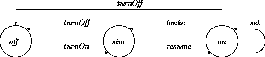

|
Chapter 19: Designing Transitions |
Objects may behave in different ways when they are in different logical states. OOA models usually address this by defining a property that distinguishes states and then defining transitions using conditional logic that refers to this property. These translate into when-guarded operations in ODL. In the simplest cases, states and guards reference boolean attributes. For example:
class CardEater
holding: bool init= false;
latched: bool init= false;
local beeper: Beeper;
local cardLatch: CardLatch;
op unlatch ==> ~latched' end
op latch ==> latched' end
op eject
when ~latched /\ holding then
cardLatch.release', ~holding'
elsewhen ~latched /\ ~holding then
beeper.beep'
else pend end
end
An operation may contain any number of logically exclusive when clauses. To reduce awkwardness, series of when _ elsewhen _ else _ end guards in ODL are treated analogously to if _ elsif _ else _ end constructs in that each guard in the series assumes the negation of all previous guards. However, this does not in any sense imply that they are evaluated sequentially. (They are not ``evaluated'' at all. Like `` inv'' and `` ==>'', they are descriptive, not computational constructs.)
In all cases, guards split operations into clauses, each with a state based triggering condition and corresponding actions and/or effect statements. Requests that are received when the object is not in any of the action states may be listed as ``pending'', and are triggerable at some point if and when the object enters the state. If more than one request is present when the object is ready, triggerable requests are processed in some order. The order in which pended requests are processed is a design decision. We assume first-in-first-out processing order as a default. Later examples describe ways of obtaining other disciplines.
Here, an eject request will stay pending until the CardEater is in an unlatched state. When it becomes unlatched, it will either beep or release the card, depending on its current holding state. For example, if a CardEater receives three eject messages from an angry customer while the card is being latched in the course of a transaction, it will eventually, after an unlatch request from some controller object, release the card and then beep twice. Of course, to be more realistic, we probably should have designed it to behave differently.
Guards often refer to macroscopic states defined in terms of particular settings of various attributes. For example, we can transform the version of the ATM machine presented in Chapter 5 that used the following table to describe states:
| state | Mn | Id | S1 | S2 | S3 | Fi |
| available? | n | y | y | y | y | y |
| cardIn? | n | n | y | y | y | y |
| stripInfo | nil | nil | nil | ok | ok | nil |
| PINInfo | nil | nil | nil | nil | ok | nil |
| finished? | n | n | n | n | n | y |
These states may be used to guide some of the actions described in Chapters 5 and 6:
class ATM
locals
available: bool;
cardIn: bool;
OKStripInfo: bool;
OKPINInfo: bool;
finished: bool;
fn mn = ~available /\ ~cardIn /\ ~OKStripInfo /\ ~PinInfo /\ ~finished;
fn id = ... % similar; also s1, s2, s3, fi
auth: Authenticator;
stripInfo: opt StripInfo;
pinInfo: opt PinInfo;
fn verifyStripInfo(stripInfo): bool ...;
op ejectAndReinit ... ;
op displayPinReq: () ... ;
op displayMenu: () ... ;
end
when mn then
op maintenanceAction(k: MaintReq) ==> mn' end;
op makeAvailable ==> id' end
elsewhen id then
op cardIn(si: StripInfo) ==> stripInfo' = si, s1',
if verifyStripInfo(stripInfo) then self.stripOK''
else self.stripBad'' end end
elsewhen s1 then
op stripOK ==> displayPinReq', s1' end
op stripBad ==> ejectAndReinit' end
op kb(pi: PinInfo) ==> pinInfo' = pi, s2', auth.PINCheck(pi,si)'' end
op cancel ==> ejectAndReinit' end
elsewhen s2 then
op pinOK(pi, si) ==> displayMenu', s3' end
op pinBad(pi, si) ==> ejectAndReinit' end
...
end
end
Postcondition predicates referring to states may be considered as shorthands for updates to the corresponding attributes. For example, s3' in pinOK indicates only that OKPINinfo should be set to true, since that is the only difference between s2 and s3.
In this example, the when clauses do not spell out what to do when inappropriate messages occur (for example, receiving cardIn when in state mn). These must be fully laid out in a complete design.
Our clauses only list event-driven transitions. OOA-level transitions that are enabled by internal state-based guards without any corresponding events are here transformed in two different ways:
Classes may be used to organize states and transitions. For example, consider yet another lamp design:
class VoltageLevel fn level: real; end class ActiveVoltage is VoltageLevel inv level >= 2.5 end class Ground is VoltageLevel inv level < 2.5 end inv VoltageLevel = oneOf(ActiveVoltage, Ground) class Lamp3 is Lamp active: fixed ActiveVoltage; ground: fixed Ground; switch: VoltageLevel init= ground; on: bool = (switch in ActiveVoltage); op flip ==> switch' = if on then ground else active end end end
Here, the state change in flip is performed by rebinding the switch link back and forth between a constant-active object and a constant-ground one described by the ``state-classes'' ActiveVoltage and Ground. This might strike you as being analogous to the physical act of throwing an electrical switch. It may also be seen as an instance of delegation in which the lamp uses the object at the other end of switch to help compute the on attribute. Rebindability of delegates is an often-exploited property of composite objects. Any state change can be performed by some combination of interactions with existing component objects and/or link changes to different objects.
When classes represent macroscopic states, a state value may be described in terms of the class membership of an object on the other side of a link. In ODL, the obj in class ``type test'' construct may be used for such purposes, as seen in the inv constraint here. This predicate is true when the indicated object possesses all of the features listed in the indicated class. It must be used with care. For example, `` x in Any'' is true of any object.
Changing state by changing components is often easiest when the components form little state-class hierarchies that partition logical states. The states-as-classes view is in turn most useful when each state has fixed, but different properties, that always covary. These classes thus reify the notion of state abstraction described in Chapter 5. For example, we might define a set of classes describing icons for displaying faces as:
class FIcon mouthAngle: int; eyesOpen: bool; end class FState is FIcon mouthAngle: fixed int; eyesOpen: fixed bool; end class HappyF is FState inv mouthAngle = 45, eyesOpen = true; end class SleepF is FState inv mouthAngle = 0, eyesOpen = false; end class SadF is FState inv mouthAngle = -45, eyesOpen = true; end class MutableFIcon is FIcon local switch: FState; inv mouthAngle = switch.mouthAngle; inv eyesOpen = switch.eyesOpen; op happy! ==> switch' in HappyF end happy: bool = switch in HappyF; op sad! ==> switch' in SadF end ... end
It is useful and sensible here to define an abstract superclass ( FIcon) that branches off in two directions, one side for state classes describing immutable objects, and the other for mutable, ``controlling'' objects. The states and controllers are not subclasses of each other, but can be written to share this blander superclass. This way, clients that do not care whether features are mutable or not can accept either.
These designs form good first-level defenses against incomplete or inconsistent attempts to change state. For example, it is impossible to change the state of a FIcon to happy without also changing mouth curvature. In fact, the technique might be seen as a simpler way of expressing dependencies that would be awkward to describe and maintain using inv constraints in the controller itself. In many cases, this leads to relatively simple ways to translate analysis models with complex state logistics. If any or all of the behavior-controlling states can be isolated as classes, it becomes easier to decompose and/or group operations [2].
Consider the car cruise control (CCC) example from Chapter 5. This controller just managed the logical states representing otherwise ungiven operations. There are many possible translations into a design form. Suppose the underlying operations have been partitioned into classes, each of which supports some kind of services appropriate to its macroscopic state. For illustrative purposes, we will assume that they support operation control Cruise as a stand-in.
All client components involved with cruise control operations will interact with CC Con trol lers via an intermediary controlling class, CCC. The CCC class itself just controls state transitions by switching among state-classes.
Taking a few liberties to assume that the events with no associated transitions are just ignored, giving transitions nicer names, and omitting most details other than the state logic, we obtain:

class CCController ... op controlCruise: (); end
class On is CCController ... end
class Off is CCController ... end
class SIM is CCController ... end
class CCC
locals
switch: CCController; init switch in Off
desiredSpeed: Int;
threshold: int = 30;
end
op controlCruise: () ==> switch.controlCruise' end
when switch in Off then
op turnOn
when speedSensor.current > threshold then
desiredSpeed'? = speedSensor.current, switch' in SIM
else end
op resume ==> end
op brake ==> end
op turnOff ==> end
op set ==> end
elsewhen switch in SIM then
op turnOn ==> end
op resume ==> switch' in On end
op brake ==> end
op turnOff ==> switch' in Off end
op set ==> end
else % switch in On %
op turnOn ==> end
op resume ==> end
op brake ==> switch' in SIM end
op turnOff ==> switch' in off end
op set ==> desiredSpeed? = speedSensor.current end
end
end
The analysis models in Part I assume that each object contains a ``membrane'' that protects and guides processing, causing operations to be atomic and exclusive with respect to observers. Objects noninterruptibly perform at most one publicly listed operation (transition) at a time. Noninterruptibility is one form of state-dependent operation availability. It expresses the constraint that all other operations are unavailable while the object is engaged in some particular action. In design, we normally add internal structure (scripted concrete actions) to obtain the effects of OOA-level transitions, so actions are not ``truly'' atomic. However, atomicity with respect to external observers generally needs to be maintained to obtain listed transition effects.
These dynamic concerns are mirror-images of structural ones. In the same way that essentially all design-level objects would be viewed as ensembles at the analysis level, essentially all design-level actions would be viewed as scripts (transition sequences). In both cases, external observers must be shielded from these facts unless it is known that adding visible substructure is acceptable.
When analysis models are known to be incomplete and/or inexact, the refinement of transitions into visible smaller-granularity steps may indeed be warranted. For example, an analysis model might have listed Fly from New York to California as a single transition, omitting intervening states and transitions including Drive to Airport, Board Airplane, Reboard in Chicago, and so on, where each of these may in turn be further subdivided. It is unlikely that the analysis model really intended that the coarse-grained transition be treated as atomic. Moreover, the lack of intervening states precludes descriptions of intervening actions (such as changing flights if one is canceled) that may be needed in this or future systems. These are among the issues that should be addressed during analysis model reviews (Chapter 15). If atomicity is not required, designers may reanalyze, adding appropriate visible states and transitions.
Some operations appear to be intrinsically interruptible by clients. Classic examples include operations on multimedia software objects. Multimedia objects are used to manage and control video, audio, and other displays. They commonly require interruptibility in order to break out of (usually hardware-related) ``continuous play loops''.
Atomicity requirements look problematic in such designs. Without them, one could define a stop operation that would allow an object to halt the play or display of its data, and then perhaps do something else. However, this would only be a good idea if it were OK to simply kill the object (and then perhaps generate another one). Otherwise, when it returned from the interruption, how would it know that it was supposed to halt? The only answer available from within our framework is that (1) the interruption should modify a state attribute, say, playing, and (2) the object should ``continuously'' (e.g., after every few suboperations) check to see if playing remains true.
This is essentially the solution described in Chapter 5. The object may split its chores into little pieces, listening for interrupts between steps. However, this tactic is much too difficult to live with at the design level for systems where cancellation, pausing, and resumption capabilities are routinely required. While one could define operations listing all of the possible listening points, this is very error prone.
As an abbreviation, we can predefine a special pseudo-operation interrupt that is considered to be immediately receivable at any time by an object listing it in its interface. The operation immediately places the object in a ``listening'' mode where it may process new requests, but makes no guarantees that the object is in a particular or even coherent state. However, individual classes may make further guarantees, as established by some kind of low-level hardware or implementation magic. Given this, a prototypical multimedia class might be declared:
class Player ... data: blob; playing: bool; op play ==> playing' end op interrupt ==> ~playing' end op restart; % seek to beginning op resume; % continue from where left off end
More fine-grained control over interruptible objects may be obtained through layering. For example, the idea of ``play until a trap signal is received'' may be translated by building an object that sets a Player in motion and then sends an interrupt when it receives message trap and the Player is playing.
As seen here, multimedia objects sometimes need to carry completely uninterpreted bunches of bits. These might include graphics images, video signals, sounds, and so on. In ODL we describe these as blobs. They are immutable and passed around as copies. However, their inner structures cannot be defined from within ODL. (If they could be described, they would not be blobs.) They may, however, be wrapped up in classes that are then used in a normal way.
Even in more ordinary designs, interruptibility is not always seen as a liability. For example, the concept of procedural recursion is based on the idea that an object may suspend itself inside one procedure by issuing a blocking call for the same procedure, but with different arguments. Resumptions unwind in a stack-based fashion. All state changes effected in the inner call hold when the outer one is resumed. Similarly, an object may want to suspend one operation while it performs another. It is very common to write operations that include internal calls to perform various utility functions.
There is no reason at all to preclude many such constructions as long as designs are clear about their intent. Atomicity need only be maintained with respect to external agents. There is a difference between a public operation and an internal reference to something defined as a local. In ODL, actions defined within locals are always available within otherwise atomic operations. We have been using locals in this way routinely.
These inner references cannot go through an object's ``outer membrane'', so they cannot be treated as possibly externally generated events in which an object just happens to be its own client. Not only are locals not part of an external interface, but, in a very real sense, they are not even part of the ``controlling'' object per se. They are components of the ``controlled'' part of an object. In fact, these local operations might as well belong to other delegated objects, and could be so converted if necessary.
This notion that objects may stand back to investigate and invoke inner features is a form of reflection . It is less exotic than it may sound. Reflection is an intrinsic part of guard evaluation. When any object receives a message requesting an operation with a when clause, it must evaluate its own state while deciding whether to engage in a corresponding action. Similarly, if an object needs to employ a little utility routine in the midst of some other operation, it may do so without having to act as its own external client. At a mechanical level, this may require that such objects be implemented using a ``local control stack''. Alternatively, the local wait states and notification techniques described in Chapter 20 may be employed.
An implementation-level view of this distinction is that in a distributed system, local access normally corresponds to operations within a process's own address space, and external access corresponds to remote messages. For emphasis and ease of subsequent translation, we list any message m in which an object explicitly serves as its own external client as self.m. Unless a class defines mechanics for interrupting, suspending, and resuming public operations, usage is restricted to one-way sends.
Similarly, we could also explicitly list both inner and outer forms of inspective fns. But because they are purely state-preserving, we have treated them as usable in either sense. If desired, locals may be used to define inner-only versions. For example, in Chapter 17, we mentioned that a Point object might cache its polar coordinates when asked about them via an external fn, but must be able to inspect its state internally without performing this caching.
In Chapter 11, we discussed specification strategies for bounding the durations of services and transitions. We employ similar strategies in (abstract) design. Any effect may include a time-of prefix `` @''. These may be mixed in expressions with time literals indicating elapsed times since operation triggering. For example:
class Renderer
op fastRender(s: Scene): () ==>
@(diff(displayedLuminance(s), luminance(s)) < 0.1) < 1sec end
op slowRender(s: Scene): () ==>
1hr < @(diff(displayedLuminance(s), luminance(s)) < 0.0001) < 2hr end
end
This says that the fastRender effect occurs within one second of the operation being triggered, and the slowRender effect occurs between one and two hours. This notation allows finer specification than possible using our prime and double-prime annotations that indicate effects only at the points of operation completion (prime) and any time after triggering (double-prime). This notation may also be used to make stronger claims about the ordering of effects.
Time expressions are declarative constraints, which must somehow be met by implementations. To be meaningful, all implementations must conform to the effects, the transit time of messages to and from the objects must be known or bounded, and the pend times of messages once received must be known or bounded. Timing constraints are generally only useful in applications in which enough hardware and software properties are hard-wired that such estimates can be realistically achieved. However, given that they do hold, they may be employed in the design of other classes. For example:
class RenderButton ...
r: Renderer;
op render { ...
if battery.estimatedLife < 2hr then
r.fastRender(currentScene)
else r.slowRender(currentScene) end ...}
end
The transformation of guarded actions into concretely executable statements can be difficult. A guard may list any number of conditions that must be simultaneously true in order for an operation to execute. Unfortunately, guard evaluation and triggering normally involve sequential computation (even within distributed frameworks).
This is not a problem for many classes. When guards and effects refer only to exclusively controlled properties of the recipient object, attribute evaluations may proceed sequentially. Here, if a state predicate holds true at the beginning of an evaluation sequence, it will still hold true when the operation commences. Guards that look only at nonexported own attributes fit this model. Among the most important reasons for using own attributes is to ensure simple translation of state transitions into concrete form. For example, a concrete CardEater class may be defined as:
class CardEaterV1 is CardEater
own h: Bool <>; own l: Bool <>
local beeper: Beeper <>
local cardLatch: CardLatch <>
holding: bool { h? }
latched: bool { l? }
op unlatch { l.f! }
op latch { l.t! }
op eject {
if ~l? /\ h? then cardLatch.release; h.f!
elsif ~l? /\ ~h? then beeper.beep
else pend end }
end
Because the objects representing state information are exclusively held, the guards and actions for eject may be computed in a straightforward manner.
However, guards that reference objects that are not under the exclusive control of the receiver object must be handled much more carefully. We postpone discussion of the requisite mechanics to Chapter 22, where we describe the coordination of joint actions in a more general setting.
Local self-notification techniques can simplify within-object state tracking for transitions that are specified to fire only after only a set of microtransitions.
For example, suppose that a specification states that an ImageCell object should update its brightness attribute whenever it is sent values from all four of its neighbors. As is typical in such specifications, this description fails to list all possible intermediate states that lead to firing. There may be no substitute to a painstaking decomposition of these states in design. However, minor simplifications may be based on inner self-notifications that allow an object to ``tell itself'' that a transition is potentially triggerable. In this example, the different combinations of the boolean have X values track all of the possible state configurations that can ultimately lead to firing:
class ImageCellV1 is ImageCell
locals
brightness: Real;
northV: Real; southV: Real; eastV: Real; westV: Real;
haveNorth: Bool; haveSouth: Bool; haveEast: Bool; haveWest: Bool;
northNbr: ImageCell; southNbr:ImageCell; ...
op update {
if haveNorth? /\ haveSouth? /\ haveEast? /\ haveWest? then
brightness.set((northV? + southV? + eastV? + westV?)/4.0);
haveNorth.f!; haveSouth.f!; ...
NorthNbr.SouthVal(brightness?);
SouthNbr.NorthVal(brightness?); ...
end }
end
op NorthVal(x: real) {
if ~haveNorth? then northV.set(x); haveNorth.t!; update
else pend end }
op SouthVal(x: real); % similar; also EastVal, WestVal
end
To be implementable, any class containing pend operations must be fitted with some kind of buffering mechanism to hold requests that cannot yet be honored. We will approach this by first discussing the design of stand-alone ``external'' queues that are not treated as parts of the objects using them to maintain requests. Generally, any combination of internal and external queues may be designed to support buffering.
Stand-alone queues may be constructed to hold requests serviced by one or more objects. Wrappers may be employed to represent the requests. For example, suppose we wanted to queue up a list of operations to be done later when triggered by a timer or some other event:
class Jobs
q: QUEUE[Wrapper];
op store(t: Wrapper) { q.put(t) }
op process { while ~q.empty do q.take.call end }
end
...
jobs.store(WRAP(transfer(acct1, acct2)));
jobs.store(WRAP(print(logfile)));
jobs.process;
class MessagePacket opName: String; args: SEQ[Any]; end
class Agent ...
q: QUEUE[MessagePacket];
worker: Worker;
op msg(m: MessagePacket) {
if worker.canDo(m.opName) then worker.do(m)
else ... q.put(m); end }
end
These requests may be manually queued, decoded, and so on. At some level(s) of any distributed system there are agents of this general form, if only those that send and receive packets across a network.
These basic strategies apply to a range of queue-based designs. For example, a printer might be defined using a manually designed ``passive'' wrapper class that merely reports the text to be printed (perhaps along with other print parameters):
class PrintRequest ... text: ARRAY[Char]; end
class PrinterDaemon
q: BUFFER[PrintRequest];
local op print(r: PrintRequest); ...
op mainLoop { while true do print(q.take) end }
...
end
class Printer
q: BUFFER[PrintRequest];
daemon: PrinterDaemon;
op print(m: PrintRequest) { q.put(m) }
end
op mkPrinter p: Printer {
local printQueue: BUFFER[PrintRequest] := mkBuffer...;
local printDaemon: PrinterDaemon := new PrinterDaemon(q := printQueue);
p := new Printer(q:= printQueue, daemon := printDaemon);
printDaemon.mainLoop;
reply p }
We used BUFFER instead of QUEUE in this example to permit further variations in processing. This opens up additional options for managing and scheduling activities. We could use the same basic design to different effect by defining subclasses of BUFFER[PrintRequest] and/or other changes, including the following:
The careful crafting of such policies is a central task in many designs. Common policies may be reflected in the common use of special queue classes across different applications and subsystems. Detailed descriptions of the enormous range of available scheduling policies and techniques are beyond the scope of this book. Other texts describing real-time constraints and scheduling issues from an object-oriented perspective include Levi and Agrawala [4] and Atkinson [1].
Notification techniques (as seen, for example, in ImageCell) are also useful in the design of queuing mechanics. The firing of queued messages may be controlled by sending ``wake-up'' notifications that recheck guards and possibly trigger corresponding actions. One strategy is to check for queued messages after every public operation. Another is to maintain separate queues, and only notify those whose firing conditions are impacted by the operation.
These strategies may be internalized within individual objects by localizing inside one class the three basic components of queue-based designs:
For example, the Printer, PrintDaemon, and BUFFER serve these roles in the printer design.
Each of these three kinds of components requires attention when translating classes into implementable form. However, they need not be present in each class. The notion of ``implementable form'' can vary across system architectures, implementation languages, and tools. For example, in Chapters 23 and 24 we will describe the need for combining queues of possibly many objects in order to meet resource and performance constraints. Also, the ``primitives'' and corresponding techniques available for implementing queue mechanics can differ widely. Queue processing may be implemented using simple Semaphores, monitor constructs, or just about any other similar mechanism available on a system.
We will avoid introducing any particular mechanics until we have addressed the corresponding design issues. However, nearly all approaches are based on refinements of the following basic tactics.
A queue (usually called a ``condition queue'' or ``delay queue'') may be associated with each distinct state, including topmost state ready. Because of state abstraction, requests associated with each particular (nonabstract) state may be distributed across queues. When an object is quiescent, an incoming message triggers the corresponding operation if it is available in the current state, else it is queued. After every public operation, the queue(s) associated with the current state may be checked. This may entail evaluation of additional guards to ensure that the queued operations are actually triggerable. Guards associated with message arguments and other relational constraints normally cannot be divided among a small finite number of condition queues, so require additional checks on receipt and reinspection.
Queue structure and guard (re)evaluation interact more generally. For example, it is inconceivable to associate a queue with each possible value of an Account balance. In Chapter 5, we confined ourselves to only the two states overdrawn and ok. Correctness may be maintained using an even coarser state mapping at the design level. A single queue may be associated with topmost state ready. This queue is checked after each public operation. However, all guards (including current state evaluation) associated with each requested operation must then be rechecked upon inspection. The message is requeued if the guards fail.
Single ready queues also simplify handling of messages that arrive when objects are in the midst of other operations. In most systems, incoming messages are queued via preemptive mechanisms. Any requests arriving when an object is not ready may be placed on the queue.
Again, because the detailed mechanics for designing and implementing queue processing differ across systems, configurations, tools, and languages, we avoid further commitments. We will continue to use when and pend to express designs until Chapter 24.
Guards control both the availability and choice of state-dependent behaviors. Attributes, aggregate state functions, and helper classes may be used to organize and maintain logical state information used in guards and effects. Our normal model of object computation assumes that objects are uninterruptible while in the midst of observable operations. Interruptible objects may also be designed, but must be controlled.
Untriggerable requests may wait in per-object queues until objects are ready to deal with them. Special-purpose queues and queuing disciplines may be added on top of this framework. These allow requests to be passed around and manipulated as regular objects.
Dispatching strategies based on temporal information are discussed by Takashio and Tokoro [5]. The collection [3] includes several descriptions of real-time specification languages and systems containing additional constructs that may be adapted to OO frameworks. Design issues for multimedia objects are presented in several papers in the collections edited by Tsichritzis [6,7,8].